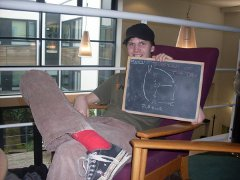

From 2011 to 2014 I was a PhD student at the University of Southampton, working with Brita Nucinkis. I received my PhD in October 2014. This website is an archive of my academic webpage from that time.
My research interests are cohomological finiteness conditions associated to proper actions of groups on spaces. This includes Bredon cohomology, particularly with Mackey and Cohomological Mackey functor coefficients, relative cohomology and Gorenstein cohomology.
In 2011 I received an MMATH from the University of Warwick.
“In these days the angel of topology and the devil of abstract algebra fight for the soul of each individual mathematical domain.”
-- Weyl
